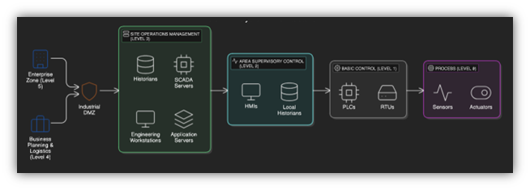
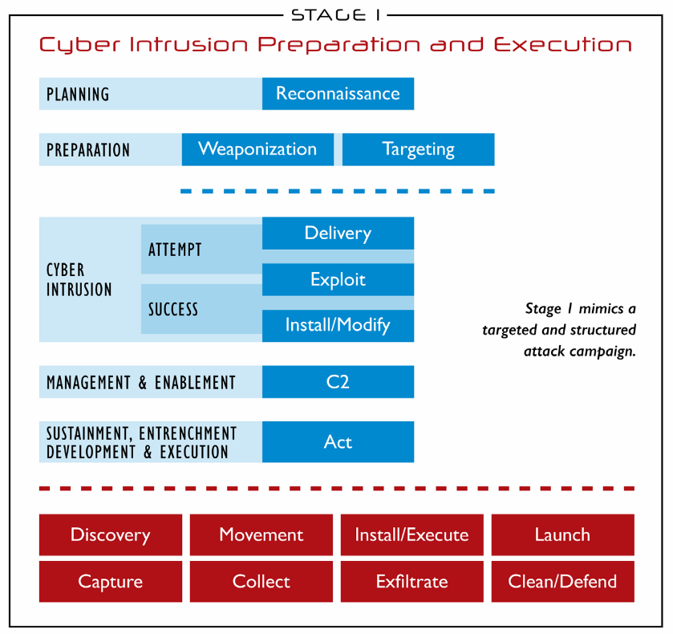

Growing Threat Landscape
The threat landscape for Industrial Control Systems is rapidly evolving with several key concerns:
- 87% increase in ICS-specific vulnerabilities in the past three years
- Integration Challenges: Convergence of IT and OT networks expanding attack surfaces
- Knowledge Gap: Limited understanding of LOLBin techniques in ICS environments
- Real-world Impact: Recent attacks like Colonial Pipeline and TRITON demonstrate catastrophic potential

LOLBins are legitimate executables that can be misused for malicious purposes, presenting a unique challenge in ICS environments where it's difficult to distinguish between legitimate and malicious use.
The Purdue Model Implementation
Our simulation environment replicates the complete Purdue Model architecture:
Upper Levels:
- Enterprise Network (Level 5): Business logistics and planning
- Corporate Network (Level 4): Production planning and scheduling
- DMZ Security Boundaries: Controlled data exchange
Lower Levels:
- Operations Network (Level 3): SCADA servers and historians
- Control Network (Level 2): HMIs and supervisory systems
- Process Network (Level 1): PLCs and control systems
- Field Network (Level 0): Sensors and actuators

The environment includes implementation of industrial protocols including Modbus TCP, DNP3, and OPC UA with appropriate network segmentation between zones.
ICS Kill Chain Implementation
Our research implemented a two-stage attack model that follows the ICS Cyber Kill Chain:
Stage 1: IT Intrusion
- Reconnaissance of enterprise systems
- Initial access through web vulnerability
- Privilege escalation in corporate network
- Lateral movement to engineering stations
Stage 2: ICS-Specific Attacks
- Development of protocol-specific payloads
- Validation in test environment
- Execution against production systems
- Physical impact assessment

Our unique contribution is the integration of LOLBin techniques with established kill chain methodology, demonstrating complete attack chains from enterprise network to physical process impact.